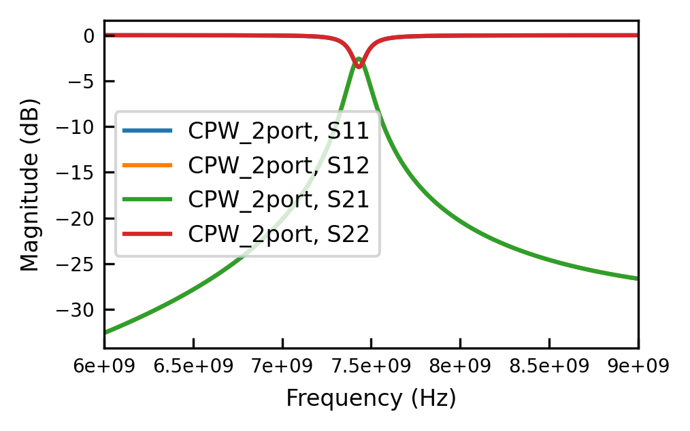
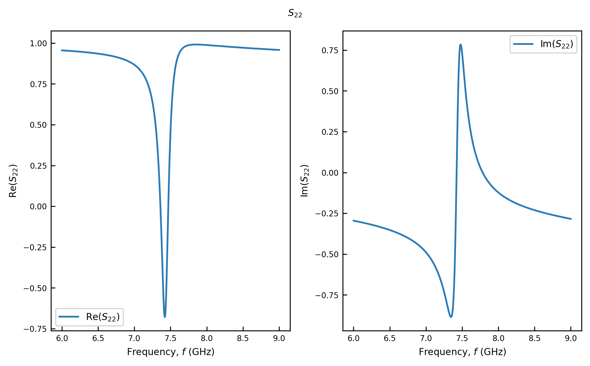
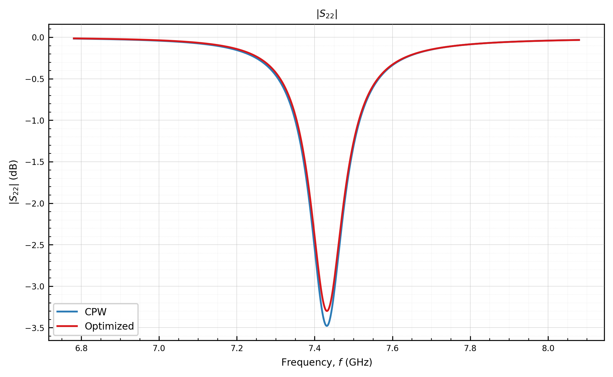

Tutorial 1: Fitting LC Models to a CPW¶
simpleLOMs replaces a distributed coplanar-waveguide (CPW) resonator with a single lumped L–C oscillator that you can drop into a circuit Hamiltonian. This tutorial fits the three models the package ships with to one CPW device and ranks them against the CPW ground truth, so you can see why the Optimized model is the default.
The device here is in the strongly, asymmetrically coupled regime (\(C_{c1}=30\) fF, \(C_{c2}=70\) fF) which allows us to compare the accuracy of the three lumped models in a realistic scenario.
[2]:
import numpy as np
import matplotlib.pyplot as plt
import skrf as rf
from pathlib import Path
from simpleLOMs import (
CPWParams, FosterFit, OptimizedFit, AnalyticalFit,
analyze_system, fit_lom, utils,
plot_re_im, plot_all_models, plot_residuals,
plot_summary, plot_transmission, plot_scan,
)
from simpleLOMs.networks.cpw import cpw_resonator_network_2port
from simpleLOMs.analysis import circle_fit_f0_kappa
from simpleLOMs.models.optimized_fit import OptimizationConfig
from simpleLOMs.schematics import lc_schematic_2port
print("All imports OK")
All imports OK
1. Load your CPW¶
The CPW geometry lives in a CPWParams dataclass, which is defined once and passed into every function that needs it.
[3]:
cpw_params = CPWParams(
w=11.7e-6, # center-conductor width (m)
s=5.1e-6, # gap spacing (m)
t=0.0, # metal thickness — 0 = ideal thin film
h=500e-6, # substrate height (m)
rho=1e-19, # resistivity ~ 0 -> superconducting limit
ep_r=11.45, # relative permittivity (ultracold silicon)
has_metal_backside=True,
tand=0.0, # lossless substrate
)
print(cpw_params)
CPWParams(w=1.17e-05, s=5.1e-06, t=0.0, h=0.0005, rho=1e-19, ep_r=11.45, has_metal_backside=True, tand=0.0)
Next we set the circuit-level parameters: the resonator length d, the reference (feedline) impedance Z0, and the coupling / ground capacitances. In practice we recommend extracting Cc1, Cc2, Ctog1, Ctog2 from the Maxwell capacitance matrices of your EM solver of choice (e.g. \(\texttt{ANSYS HFSS}\), \(\texttt{COMSOL}\)).
A single reference impedance \(Z_0 = 50\,\Omega\) is used throughout the notebook.
[4]:
d = 7.0e-3 # resonator length (m)
Z0 = 50.0 # reference / feedline impedance (ohm) — used everywhere
Cc1 = 3.0e-14 # coupling capacitor, port 1 (F) -> 30 fF
Cc2 = 7.0e-14 # coupling capacitor, port 2 (F) -> 70 fF (asymmetric!)
Ctog1 = 4.0e-14 # shunt-to-ground cap, port 1 (F)
Ctog2 = 6.0e-14 # shunt-to-ground cap, port 2 (F)
We may also define load resonators. These are not needed for the initial fit, but they let us check the hybridized frequency shift the model predicts once these loads are attached (Section 3). To approximate the case of a qubit-bus resonator, for example, we pick two loads near a typical qubit frequency (\(3\)–\(5\) GHz).
[5]:
Lload1 = 2e-09 # load 1 inductance (H)
Cload1 = 6.0e-13 # load 1 capacitance (F)
Lload2 = 4e-09 # load 2 inductance (H)
Cload2 = 6.0e-13 # load 2 capacitance (F)
f_load1 = 1.0 / (2 * np.pi * np.sqrt(Lload1 * Cload1)) / 1e9
f_load2 = 1.0 / (2 * np.pi * np.sqrt(Lload2 * Cload2)) / 1e9
print(f"Load 1 bare resonance: {f_load1:.4f} GHz")
print(f"Load 2 bare resonance: {f_load2:.4f} GHz")
Load 1 bare resonance: 4.5944 GHz
Load 2 bare resonance: 3.2487 GHz
Finally we choose a coarse frequency grid spanning the resonance. The individual fits below refine their own windows around \(f_0\).
[6]:
freq = rf.Frequency(6e9, 9e9, 400_001, unit="Hz")
1a. Inspect the CPW network¶
Build the 2-port CPW network and read off its resonance with the package’s circle fit.
[7]:
cpw_net = cpw_resonator_network_2port(
freq, d, Cc1, Cc2, Ctog1, Ctog2,
cpw_params=cpw_params, Z0=Z0,
)
f0_s11, k_s11 = circle_fit_f0_kappa(cpw_net, 0, 0)
f0_s22, k_s22 = circle_fit_f0_kappa(cpw_net, 1, 1)
print(f"CPW S11: f0 = {f0_s11/1e9:.4f} GHz kappa/2pi = {k_s11/1e6:.3f} MHz")
print(f"CPW S22: f0 = {f0_s22/1e9:.4f} GHz kappa/2pi = {k_s22/1e6:.3f} MHz")
CPW S11: f0 = 7.4301 GHz kappa/2pi = 128.921 MHz
CPW S22: f0 = 7.4302 GHz kappa/2pi = 128.141 MHz
[8]:
cpw_net.plot_s_db()
plt.show()

We can also look at \(\mathrm{Re}(S)\) and \(\mathrm{Im}(S)\) to get a feel for the lineshape.
[9]:
plot_re_im(cpw_net, m=1, n=1, title=r"$S_{22}$")
plt.show()

2. Fitting each model individually¶
simpleLOMs contains three lumped models:
``AnalyticalFit`` — closed form (for a \(\lambda/2\) resonator)
``FosterFit`` — Foster synthesis from the line’s admittance slope (Used in
PhysRevLett.108.240502).``OptimizedFit`` — our numerical fit of \(L_\mathrm{eff}, C_\mathrm{eff}\) to the CPW \(S\)-parameters, with the coupling capacitors included.
Each model follows the same three-step pattern:
model = ModelClass(...) # 1. instantiate
model.fit(freq, ...) # 2. run the fit
net = model.get_network(refined_freq, ...) # 3. build the fitted network
To rank them fairly we build one CPW reference and score every model against it using circle_fit_f0_kappa.
[10]:
# One refined CPW reference; every model is scored against it the same way.
refined_freq = rf.Frequency(f0_s11 - 0.5e9, f0_s11 + 0.5e9, 20_001, unit="Hz")
cpw_ref = cpw_resonator_network_2port(
refined_freq, d, Cc1, Cc2, Ctog1, Ctog2,
cpw_params=cpw_params, Z0=Z0,
)
f0_cpw, k_cpw = circle_fit_f0_kappa(cpw_ref, 0, 0)
print(f"CPW ground truth: f0 = {f0_cpw/1e9:.4f} GHz kappa/2pi = {k_cpw/1e6:.3f} MHz")
def score(name, net):
"Circle-fit a fitted LOM network and print its signed error vs the CPW."
f0, k = circle_fit_f0_kappa(net, 0, 0)
print(f"{name:11s} f0 = {f0/1e9:.4f} GHz (err {(f0-f0_cpw)/f0_cpw*100:+.3f}%)"
f" kappa/2pi = {k/1e6:.3f} MHz (err {(k-k_cpw)/k_cpw*100:+.2f}%)")
return f0, k
CPW ground truth: f0 = 7.4301 GHz kappa/2pi = 128.455 MHz
2a. AnalyticalFit¶
AnalyticalFit uses two closed-form expressions,
so it needs an unloaded resonance frequency and the CPW characteristic impedance \(Z_0^{\mathrm{cpw}}\). Here \(Z_0^{\mathrm{cpw}} = 45.926\,\Omega\) and the unloaded \(f_r = 8.58\) GHz; both are readable from scikit-rf or TXLine.
[11]:
Z0_cpw = 45.926 # CPW characteristic impedance (geometry) — NOT the 50 ohm ref
f0_unloaded = 8.58e9 # unloaded lambda/2 resonance
analytical = AnalyticalFit(mode=2) # mode=2 -> lambda/2 (default)
analytical.fit(refined_freq, f_r=f0_unloaded, Z0=Z0_cpw)
print(analytical)
analytical_net = analytical.get_network(
refined_freq, Cc1=Cc1, Cc2=Cc2, Ctog1=Ctog1, Ctog2=Ctog2, Z0=Z0,
reference=cpw_ref, show=True, m=0, n=0,
lom_label="AnalyticalFit", data_label="CPW",
)
plt.show()
score("Analytical", analytical_net)
AnalyticalFit(L=5.4234e-10 H, C=6.3445e-13 F, f_r=8.5800 GHz)

Analytical f0 = 7.4892 GHz (err +0.794%) kappa/2pi = 120.711 MHz (err -6.03%)
[11]:
(7489157180.047385, 120711475.20221901)
2b. FosterFit¶
FosterFit extracts L and C from the admittance slope \(\mathrm{d}B/\mathrm{d}\omega\) at the CPW resonance. It needs only the resonator length d and the CPW geometry — no measured \(S\)-parameters.
[12]:
foster = FosterFit(cpw_params=cpw_params)
foster.fit(freq, d=d)
print(foster)
foster_net = foster.get_network(
refined_freq, Cc1=Cc1, Cc2=Cc2, Ctog1=Ctog1, Ctog2=Ctog2, Z0=Z0,
reference=cpw_ref, show=True, m=0, n=0,
lom_label="FosterFit", data_label="CPW",
)
plt.show()
score("Foster", foster_net)
FosterFit(L=5.5275e-10 H, C=6.2215e-13 F, f0=8.5824 GHz)

Foster f0 = 7.4736 GHz (err +0.585%) kappa/2pi = 122.021 MHz (err -5.01%)
[12]:
(7473615023.54162, 122020731.34065533)
2c. OptimizedFit¶
OptimizedFit runs two stages of numerical optimisation against the CPW \(S_{11}\) and \(S_{22}\), with the coupling capacitors held fixed. It takes the CPW network as input.
The default settings nearly always outperform FosterFit and AnalyticalFit. When you do want to tune the optimiser, you can change settings inOptimizationConfig. THe settings are:
``w0_window_frac`` — how tightly the Stage-1 scan brackets \(\omega_0\). Use \(\sim 0.0001\) for localized behaviour at resonance; relax to \(\sim 0.005\)–\(0.05\) for broadband behaviour across a wide span.
``n_w0`` — number of Stage-1 scan points for the initial \(\omega_0\) guess. \(\sim 10\)–\(20\) is plenty (it is refined later).
``n_dense`` — number of Stage-1 optimisation points; \(\lesssim 100\) keeps runtime down.
``n_widths`` — the Stage-2 window in units of linewidth, e.g.
n_widths=3fits over \(\pm 3\kappa\) about \(\omega_r\).
For localized behaviour set w0_window_frac \(\sim 0.0001\) and n_widths \(\sim 1\). For broadband behaviour, it is best to relax these both.
[13]:
config = OptimizationConfig(
w0_window_frac=0.0001,
n_w0=10,
n_dense=10,
n_widths=3.0,
verbose=False, # set True to watch the least-squares iterations
)
optimized = OptimizedFit(config=config)
optimized.fit(
refined_freq, data_ntw=cpw_ref,
Cc1=Cc1, Cc2=Cc2, Ctog1=Ctog1, Ctog2=Ctog2,
d=d, cpw_params=cpw_params, Z0=Z0,
)
params = optimized.get_params()
print(optimized)
print(f"L = {params['L']:.4e} H C = {params['C']:.4e} F")
optimized_net = optimized.get_network(
refined_freq, Cc1=Cc1, Cc2=Cc2, Z0=Z0,
reference=cpw_ref, show=True, m=0, n=0,
lom_label="OptimizedFit", data_label="CPW",
)
plt.show()
score("Optimized", optimized_net)
OptimizedFit(L=5.9105e-10 H, C=6.7795e-13 F)
L = 5.9105e-10 H C = 6.7795e-13 F

Optimized f0 = 7.4302 GHz (err +0.001%) kappa/2pi = 127.512 MHz (err -0.73%)
[13]:
(7430198159.717065, 127511817.87388897)
The optimiser minimises the complex residuals (real and imaginary parts) of \(S_{11}\) and \(S_{22}\) over a window of \(\pm n_\mathrm{widths}\,\kappa\) around each resonance (here we choose n_widths=3).
To confirm that the optimized fit worked, plot_scan shows the Stage-1 \(\omega_0\) scan found a clean minimum, and plot_residuals shows the leftover \(S\)-parameter mismatch across the band.
[14]:
plot_scan(optimized)
plt.show()

[15]:
plot_residuals(
data_ntw=cpw_ref,
lom_networks={"optimized": optimized_net},
m=0, n=0, # S11
save_path="figures/residuals_s11.pdf",
)
plt.show()
Saved: figures/residuals_s11.pdf

2d. Side-by-side overlay¶
plot_all_models puts all four networks on one axes so you can visually rank the methods.
[16]:
plot_all_models(
{
"CPW (reference)": cpw_ref,
"Analytical LC": analytical_net,
"Foster LC": foster_net,
"Optimized LC": optimized_net,
},
m=0, n=0, quantity="re",
title=r"$\mathrm{Re}(S_{11})$",
)
plt.show()

In this regime, the Optimized method is the clear winner. Its resonance sits within a few thousandths of a percent of the CPW ground truth and its linewidth within about one percent, while Foster and Analytical drift by roughly half a percent to a percent in frequency and several percent in linewidth. This is exactly the strong, asymmetric-coupling regime (\(C_{c1}=30\) fF, \(C_{c2}=70\) fF) where fitting with the coupling capacitors included is important.
3. Full system comparison in one call¶
analyze_system() runs all three fits for you, extracts \(f_0\) and \(\kappa\) from \(S_{11}\) and \(S_{22}\) with circle fits, and, because we pass the loads defined in the beginning, also builds a loaded network and reports the hybridized frequency shifts against the CPW. It returns a results dict holding every fitted model, network, and error metric.
[17]:
freq_sys = rf.Frequency(5e9, 10e9, 300_001, unit="Hz")
results = analyze_system(
freq=freq_sys,
d=d,
Cc1=Cc1, Cc2=Cc2,
Ctog1=Ctog1, Ctog2=Ctog2,
Lload1=Lload1, Cload1=Cload1,
Lload2=Lload2, Cload2=Cload2,
cpw_params=cpw_params,
Z0=Z0, # same 50 ohm reference as above
analytical_Z0=Z0_cpw, # CPW characteristic impedance for the analytical formula
verbose=False,
)
print("analyze_system() complete.")
print("Result keys:", [k for k in results
if not isinstance(results[k],
(rf.Network, FosterFit, OptimizedFit, AnalyticalFit))][:12], "...")
analyze_system() complete.
Result keys: ['Z0 (Ohms)', 'Cc1 (F)', 'Cc2 (F)', 'Ctog1 (F)', 'Ctog2 (F)', 'Optimized L (H)', 'Optimized C (F)', 'Foster L (H)', 'Foster C (F)', 'Analytical L (H)', 'Analytical C (F)', 'CPW f0 S11 (GHz)'] ...
3a. Results as tables¶
[18]:
utils.make_results_table(results)
[18]:
| f0 S11 (GHz) | κ S11 (MHz) | f0 S22 (GHz) | κ S22 (MHz) | f0 error S11 (%) | κ error S11 (%) | f0 error S22 (%) | κ error S22 (%) | |
|---|---|---|---|---|---|---|---|---|
| Method | ||||||||
| CPW | 7.4301 | 128.4978 | 7.4302 | 128.1283 | NaN | NaN | NaN | NaN |
| Optimized | 7.4302 | 127.5310 | 7.4303 | 127.1505 | -0.0009 | 0.7524 | -0.0011 | 0.7631 |
| Foster | 7.4736 | 122.0642 | 7.4736 | 121.6878 | -0.5846 | 5.0068 | -0.5847 | 5.0266 |
| Analytical | 7.4910 | 120.8367 | 7.4910 | 120.4568 | -0.8189 | 5.9620 | -0.8190 | 5.9873 |
[19]:
utils.make_params_table(results)
[19]:
| L (H) | C (F) | |
|---|---|---|
| Model | ||
| Foster | 5.527729e-10 | 6.221275e-13 |
| Optimized | 5.909357e-10 | 6.780946e-13 |
| Analytical | 5.421902e-10 | 6.342700e-13 |
Here we can see the f0 error and kappa error columns for all three models. Optimized is the best performing model, while Foster comes second and Analytical last.
3b. Plotting the results¶
The results dict stores the fitted networks, so you can plot various metrics of interest without rerunning anything.
[20]:
plot_summary(
results, port="s11",
title=r"Fit summary",
save_path="figures/fit_summary.pdf",
)
plt.show()
Saved: figures/fit_summary.pdf

[21]:
plot_transmission(
networks={
"cpw": results["cpw_network"],
"optimized": results["optimized_network"],
},
m=1, n=1,
)
plt.show()

[22]:
plot_all_models(
{
"CPW": results["cpw_network"],
"Foster": results["foster_network"],
"Optimized": results["optimized_network"],
"Analytical": results["analytical_network"],
},
m=0, n=0, quantity="re",
title=r"$\mathrm{Re}(S_{11})$",
)
plt.show()

3c. Getting the model parameters¶
Call .get_params() on any fitted model to pull out its effective \(L_\mathrm{eff}, C_\mathrm{eff}\).
[23]:
print("Optimized :", results["optimized_model"].get_params())
print("Foster :", results["foster_model"].get_params())
print("Analytical:", results["analytical_model"].get_params())
Optimized : {'L': 5.90935720745428e-10, 'C': 6.780946352532717e-13, 'phase': None, 'scan_results': array([[4.66341850e+10, 6.40216593e-13, 6.21201366e-10, 1.02637034e-02],
[4.66342340e+10, 6.40039754e-13, 6.21348500e-10, 8.13772276e-03],
[4.66342831e+10, 6.39861013e-13, 6.21497301e-10, 6.25888651e-03],
[4.66343322e+10, 6.39680449e-13, 6.21647706e-10, 4.62690759e-03],
[4.66343813e+10, 6.39497969e-13, 6.21799797e-10, 3.24149601e-03],
[4.66344304e+10, 6.39313689e-13, 6.21953476e-10, 2.10235884e-03],
[4.66344795e+10, 6.39127541e-13, 6.22108804e-10, 1.20920020e-03],
[4.66345286e+10, 6.38939484e-13, 6.22265818e-10, 5.61721220e-04],
[4.66345777e+10, 6.38749587e-13, 6.22424462e-10, 1.59620110e-04],
[4.66346268e+10, 6.38557825e-13, 6.22584760e-10, 2.59210091e-06],
[4.66346758e+10, 6.38364193e-13, 6.22746718e-10, 9.03294653e-05],
[4.66347249e+10, 6.38168689e-13, 6.22910342e-10, 4.22521514e-04],
[4.66347740e+10, 6.37971324e-13, 6.23075623e-10, 9.98854594e-04],
[4.66348231e+10, 6.37772085e-13, 6.23242576e-10, 1.81901209e-03],
[4.66348722e+10, 6.37570967e-13, 6.23411206e-10, 2.88267441e-03],
[4.66349213e+10, 6.37368014e-13, 6.23581481e-10, 4.18951900e-03],
[4.66349704e+10, 6.37163152e-13, 6.23753465e-10, 5.73922036e-03],
[4.66350195e+10, 6.36956460e-13, 6.23927094e-10, 7.53144998e-03],
[4.66350686e+10, 6.36747852e-13, 6.24102443e-10, 9.56587642e-03],
[4.66351177e+10, 6.36537383e-13, 6.24279469e-10, 1.18421652e-02]])}
Foster : {'L': 5.527728992684269e-10, 'C': 6.221274876932394e-13, 'f0_Hz': 8582366666.666667}
Analytical: {'L': 5.421902150176881e-10, 'C': 6.342700237004928e-13, 'f_r_Hz': 8582369343.950997, 'Z0': 45.926}
3d. Using fit_lom to get L, C directly¶
When all you need is the effective L, C for a chosen model, you can use the fit_lom function. This is the function used throughout Tutorials 2–6.
[24]:
L, C = fit_lom(
d, model="optimized",
Cc1=Cc1, Cc2=Cc2, Ctog1=Ctog1, Ctog2=Ctog2,
cpw_params=cpw_params, freq=refined_freq,
)
f_r = 1.0 / (2 * np.pi * np.sqrt(L * C))
print(f"fit_lom(optimized): L = {L*1e9:.4f} nH C = {C*1e15:.2f} fF f_r = {f_r/1e9:.4f} GHz")
fit_lom(optimized): L = 0.5909 nH C = 678.09 fF f_r = 7.9507 GHz
3e. Draw the fitted LC schematic¶
The same L, C drop straight into a schematic. Because OptimizedFit folds the ground capacitances into its effective \((L, C)\), the lumped diagram has no Ctog — only the coupling capacitors and the parallel LC tank (P1 — Cc1 — [LC] — Cc2 — P2).
[25]:
figdir = Path("figures")
figdir.mkdir(exist_ok=True)
sch_lc = lc_schematic_2port(
L, C, Cc1, Cc2, Z0=Z0,
annotations={
"L_nH": round(L * 1e9, 3),
"C_fF": round(C * 1e15, 2),
"f_r_GHz": round(f_r / 1e9, 4),
},
title="Fitted Optimized LOM",
)
sch_lc.save_svg(figdir / "fitted_lc.svg")
sch_lc.save_html(figdir / "fitted_lc.html")
print("saved figures/fitted_lc.svg|.html")
sch_lc
saved figures/fitted_lc.svg|.html
[25]:
When the coupling is strong and asymmetric, OptimizedFit reproduces the distributed response where the closed-form and Foster models cannot, so it is the default everywhere in simpleLOMs.
## Where to go next
Tutorial 2 extends this single-device ranking across the whole coupling plane.
Tutorial 3 shows how to scale up from one resonator to capacitively-coupled chains, reducing each resonator to its fitted LOM.
Tutorials 6–7 show how to use the
L, Cparameters to design a single resonator to meet design targets.